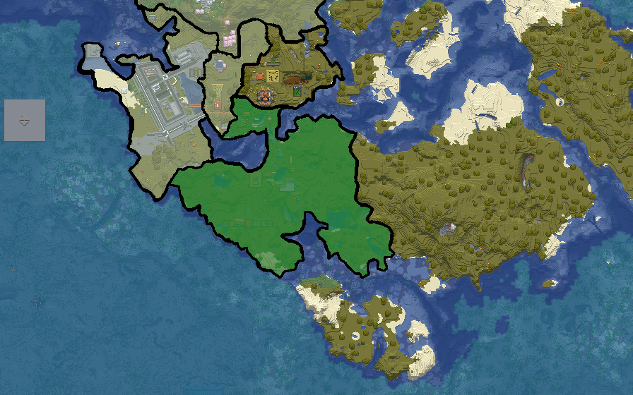

Andalusia, officially The Federal Republic of Andalusia, is a country located in Southern Europe.[1] It borders Varensk to the west, Lamporia to the northwest, and Marolands to the north.
The country consists of a 46.6-kilometre coastline on the Azucar Sea. Andalusia is mostly characterized by barren landscapes, covering over 40,761 square kilometers, with a population of approximately 12.8 million people.[2]
Andalusian is the official language of the nation, while Arabic is the second official language. Andalusia has a temperate hot climate with the exception of the northern and southern coasts.
Seville, the capital, is geographically situated near the northern border with Marolands. Other large urban cities include Malaga, Córdoba, and Granada.
Etymology
The name Andalusia has traditionally been derived from the name of the Vandals, who settled in Hispania in the 5th century.
History
The history section is reserved for the detailed historical material from the nation document. No additional historical facts are invented here.
Geography
Andalusia is located in Southern Europe and has a 46.6-kilometre coastline on the Azucar Sea. Its territory covers over 40,761 square kilometers and is described as mostly barren landscape.[3]

Governance and politics
Andalusia is officially known as the Federal Republic of Andalusia. The detailed political structure can be placed here from the nation document.
Economy
Economy details from the full nation document can be placed in this section.
Demographics
The population of Andalusia is approximately 12.8 million. Andalusian is the official language and Arabic is the second official language.
Culture
Culture details from the full nation document can be placed in this section.
See also
Notes
Notes will appear here as they are added to the article.
References
Further readings
Further readings will appear here.
External links
External links will appear here.
Talk
This is a local mockup. The Talk tab is intentionally non-functional.